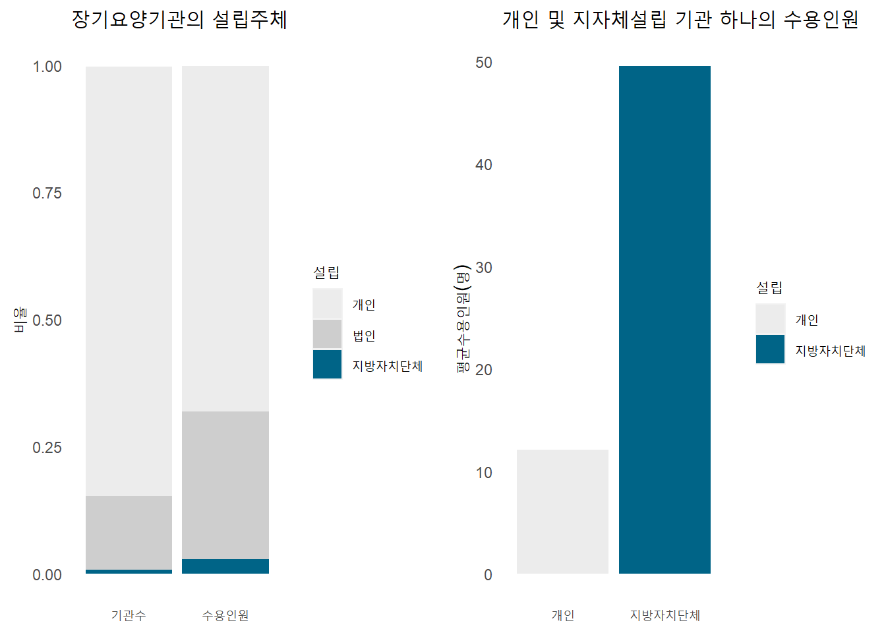
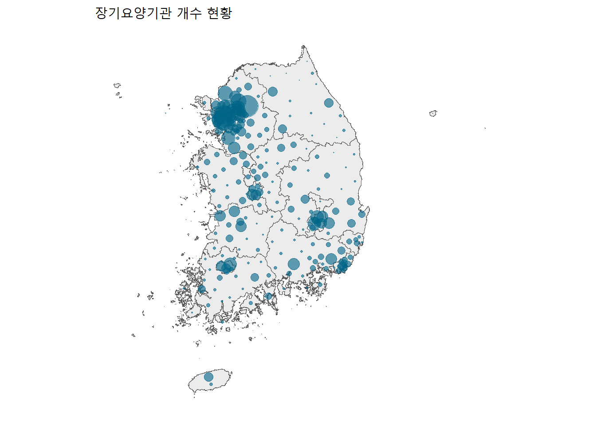
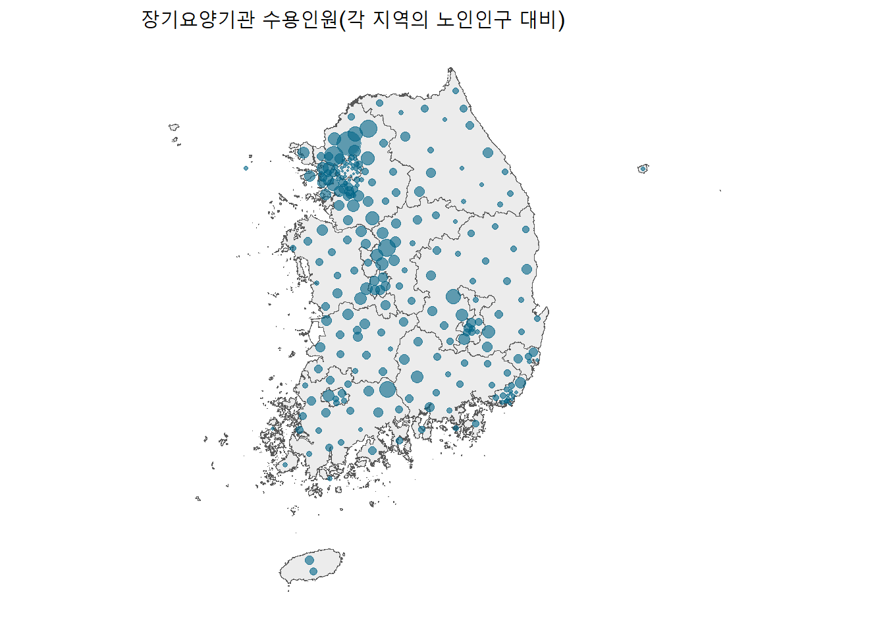
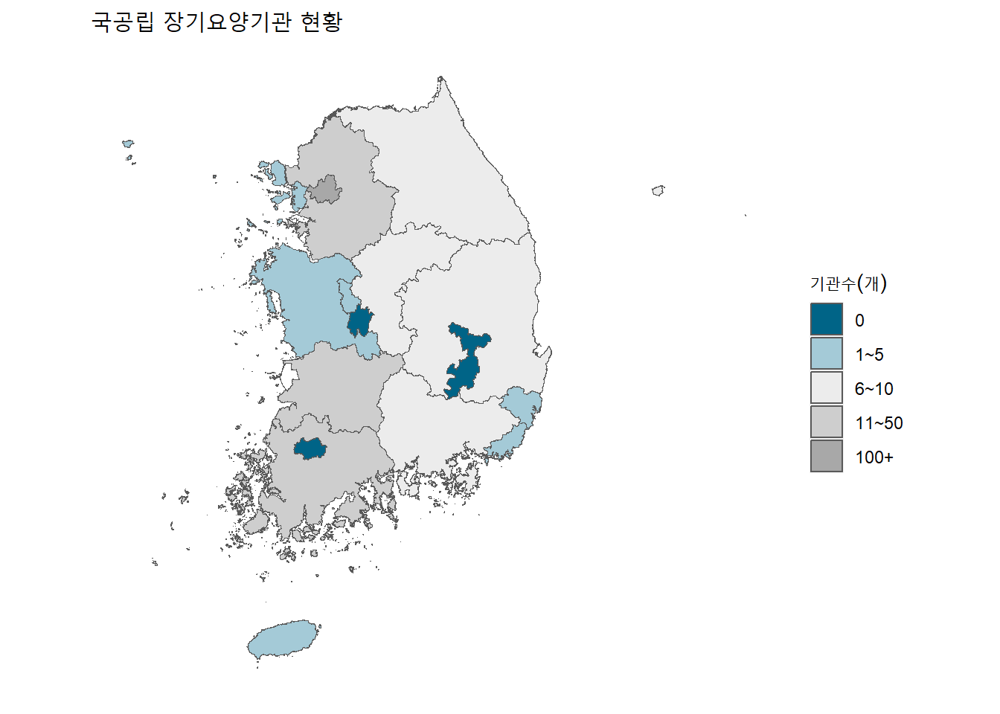

Warning: package 'sf' was built under R version 4.3.3Warning: package 'ggtext' was built under R version 4.3.33조-김도연, 김예인, 양아이치, 즈엉티미주엔
2024-07-11 16:25:20
지난해, 주민등록 인구통계를 집계한 이래 처음으로 70대 인구가 20대 인구를 앞질렀다.
국제연합(UN)은 65세 이상 인구의 비율이 7% 이상인 경우 고령화 사회, 14% 이상은 고령사회, 20% 이상은 초고령사회로 분류하고 있다.
한국은 초고령 사회까지 1%조차 남지 않았으며 2025년에는 65세 이상 인구의 비율이 20.3%로 초고령 사회에 다다를 것으로 예상된다. 통계청의 장래인구추계 자료에 따르면, 우리나라는 급속한 고령화 속도를 보이고 있으며, 노인 인구 역시 급증할 것으로 보인다.
| 구분 | 65세 이상 노인 인구수 | 비율 |
| 2024년 | 9938 천 명 | 19.2% |
| 2025년 | 10,514 천 명 | 20.3% |
| 2029년 | 12,521 천 명 | 24.4% |
| 2034년 | 14,763 천 명 | 29.0% |
초고령 사회를 앞둔 상황에서, 중장년 세대는 부모 부양과 자녀 부양의 이중고를 겪고 있다. 가사노동을 전담하다시피 해온 여성의 사회 경제적 참여도 지속적으로 증가하며, 가족 내 돌봄 가능성은 지속적으로 약화되고 있다.
이러한 배경에서, 노인층의 규모 확대는 관련 복지서비스에 대한 필요로 연결된다. 노인들이 지역사회에서 필요한 사회서비스를 받을 수 있게 하는 서비스 체계를 구축함으로써 노인이 존엄한 노년을 영위할 수 있도록 도우며 노인의 사회적 고립을 완화하는 환경을 만들 수 있을 것이다(참여연대 사회복지위원회, 2023). 노인장기요양은 그러한 환경을 만들기 위한 국가적 기틀로서 의의를 가진다.
그러나, 노인장기요양보험제도가 도입된지 16년이 지난 지금, 우리 사회는 초고령사회에 대해 충분한 대비를 이루고 있다고 보기는 어렵다.
현재 노인장기요양의 문제점을 살펴보기에 앞서, 해당 제도에 관한 이해가 필요하다.
노인장기요양보험제도는 ’고령이나 노인성 질병 등으로 일상생활을 혼자서 수행하기 어려운 이들에게 신체활동 및 일상생활 지원 등의 서비스를 제공하여 노후 생활의 안정과 그 가족의 부담을 덜어주기 위한 사회보험제도’이다. 65세 이상 노인 또는 치매, 중풍, 파킨스병 등 노인성 질병을 앓고 있는 65세 미만인 자 중 6개월 이상의 기간 동안 일상생활을 수행하기 어려워 장기요양서비스가 필요하다고 인정되는 자에게 급여가 제공된다.
다시 말해, 노인장기요양보험제도는 고령이나 노인성 질병으로 장기요양서비스가 필요한 사람들에게 서비스 이용 급여를 제공하는 제도이다. 급여내용은 시설급여와 재가급여로 구분된다.
|
장기요양서비스가 필요하다고 인정받은 자는 장기요양기관을 이용하게 된다. 장기요양기관은 등급을 받은 수급자에게 서비스를 제공하는 시설이며 노인의료복지시설, 재가노인복지시설로 구분된다.
(가) 노인의료복지시설 (장기요양급여수급자 중 시설급여 대상자가 입소하는 장기요양기관)
(나) 재가노인복지시설 (장기요양급여수급자 중 재가급여 대상자가 이용하는 장기요양기관)
|
본 기사에서는 노인장기요양의 문제점들 중 장기요양기관에 초점을 두었다.
장기요양기관과 관련하여 요양시설, 요양원, 보호센터 등 다양한 용어가 혼재되어 사용되는 경우가 많다. 장기요양기관은 노인의료복지시설과 재가노인복지시설을 포괄한다.
Warning: package 'sf' was built under R version 4.3.3Warning: package 'ggtext' was built under R version 4.3.3Rows: 250 Columns: 4
── Column specification ────────────────────────────────────────────────────────
Delimiter: ","
chr (3): SIG_ENG_NM, SIG_KOR_NM, geometry
dbl (1): SIG_CD
ℹ Use `spec()` to retrieve the full column specification for this data.
ℹ Specify the column types or set `show_col_types = FALSE` to quiet this message.2022년 기준, 장기요양기관 중 84%는 개인이 설립한 시설이다. 법인 설립은 14%, 지방자치단체 설립은 1%도 되지 않는다.

각 기관의 수용인원을 살펴보면, 개인 설립이 67.9%, 지방자치단체 설립이 2.9%를 차지했다. 전체 기관의 1%도 되지 않는 지방자치단체의 장기요양기관이 수용인원으로는 3% 가까이 차지한다. 이는 국공립 기관의 규모가 비교적 크다는 것인데 국공립 기관의 평균 수용인원은 개인 설립 기관의 4배에 달한다.
하지만 현재의 장기요양은 어느정도 규모의 국공립 기관보다 산발적으로 들어선 작은 규모의 개인 기관에 의존하고 있다.
또한, 민간 운영자의 사업성 중심으로 설립되어 특정 지역 중심으로 집중되는 현상을 보인다.
장기요양기관은 경기도 10,158개, 서울 5,965개 순으로 많았다. 반면에 하위 순으로는 세종 129개, 제주 376개, 울산 644개, 강원도 1,342개로 수도권 지역과는 극명한 차이를 보였다.

위 지도는 장기요양기관의 지역 편차 현상을 뚜렷이 보여준다. 인구가 밀집된 수도권에 기관이 집중적으로 설립되어 있음을 확인할 수 있다. 물론 장기요양기관의 수도권 쏠림 현상을 마냥 문제라 할 수는 없다. 인구가 많은 곳에 많은 기관이 설립되어 수요와 공급 법칙을 따르는 것은 당연하기 때문이다.
그러나, 과연 장기요양기관의 수요와 공급은 균형을 이루고 있을까?

해당 의문을 해결하기 위해 시군구의 장기요양기관 수용인원을 그 지역의 노인 인구수로 나누어 보았다. 즉 동그라미의 크기가 작을수록 인구에 비해 수용인원이 부족하다는 뜻이다.
지역별 편차에 따른 수요와 공급의 불균형은 한눈에 느껴질 정도로 뚜렷하게 나타난다. 요양시설이 과소 공급되고 있는 지역은 장기요양서비스에서 소외되는 이들이 많을 확률이 높다. 반대로 요양기관이 밀집되어 있는 지역은 과다 경쟁 등으로 인한 경영난의 우려가 있다.
대표적으로 서울과 강원도지역의 장기요양기관의 부족과 경기지역의 과잉 공급을 확인할 수 있었다.
서울의 경우, 기관 자체는 많지만 인구가 월등히 높아, 공급이 수요를 쫓아가지 못하고 있는 실정이다. 물론 서울은 인접한 경기지역의 요양시설을 이용할 수 있어 괜찮을 수 있겠지만, 강원도지역은 더욱 열악한 환경이다. 넓은 땅에 비해 기관이 턱없이 부족해 다른 지역의 기관을 찾아가기도 어렵기 때문이다.
국공립 장기요양기관의 지역별 편차는 전체 장기요양기관의 지역 편차보다 심각했다.

대구, 대전, 광주에는 단 하나의 국공립 기관도 존재하지 않았고, 부산, 세종은 1개, 충남은 ’도’인데도 5개 밖에 설립되어 있지 않았다. 이는 노인 돌봄 공공 인프라의 지역적 차별이며 모든 국민이 동등하게 누려야 할 서비스에서 소외되는 이들이 있다는 문제를 낳는다.
국공립 장기요양기관 확충은 여러 이유에서 중요하다.
먼저, 장기요양시설이 부족한 지역에 국가에서 시설을 설립함으로 서비스로부터 소외되는 이들을 구제하고 지역적 불평등을 해소하여야 한다.
또한 민간 장기요양기관은 몇가지 문제를 안고 있다.
민간이 운영하는 기관은 폐업률 또한 공공이 운영하는 시설에 비해 높다. 박현봉, 박환용(2019)은 “특정 지역으로 집중되고 있는 노인요양시설의 가장 큰 문제점은 노인복지 서비스의 불균형 및 특정 지역 집중에 따른 노인요양시설 경쟁 심화와 그로 인한 서비스의 질의 하락이라고 할 수 있다.”고 했다. 앞서 말했듯, 과잉 공급으로 인한 과다 경쟁은 경영난의 어려움과 폐업으로 이어질 수 있다.
뿐만 아니라 민간이 운영하는 기관은 요양보호사의 평균급여도 공공이 운영하는 장기요양기관보다 낮아 요양보호사의 처우도 열악하고, 이 때문에 민간기관의 서비스 질이 하락할 수 밖에 없다.
민간 요양 기관은 심각한 비리 문제로 논란이 되기도 했다. 요양기관이 지급 받은 요양급여비용 등에 대해 보건복지부가 현지조사를 실시한 결과 2022년 기준 부당 적발률은 86.4%에 달했다. 민간 요양시설의 비리 문제는 신뢰도 저하로 이어졌다. 급여비용 부당 적발 사례 이외에도, 노인 방치 및 학대, 요양보호사의 처우 문제 등 다양한 문제가 계속되며 부모님을 직접 모시지 못하고 요양시설로 보내야 하는 자식들의 마음은 무거워져야 했다.
인력난과 비용 부담으로 인해 대부분의 요양 서비스의 질이 하락하고 있는 상황에서 양질의 서비스를 제공하는 민간 시설도 존재한다. 그러나, 양질의 서비스를 제공하는 시설은 그 수가 극히 제한적이거나 고가 요금이 책정되어 사실상 극소수만이 이용할 수 있다. 이는 노인빈곤의 문제와도 직접적으로 연관되며 노년의 기본권이 영위되지 못한다면 심각한 사회적 불평등 문제로 볼 수 있다.
적게는 몇 개월, 많게는 몇 년을 국공립 기관에 입소하기 위해 기다리거나 심지어 자신이 거주하던 지역에서 벗어난 기관 입소를 고려해야 하는 노인분들이 있다.
지역적, 사회적 불평등의 문제를 해결하여 노인이 존엄한 노년을 영위할 수 있도록, 노인 인구 및 지역 특성을 고려하여 국공립 장기요양기관을 확충하는 것이 반드시 필요하다.
1. 박현봉, 박환용. (2019). 수도권 노인요양시설 과밀 분포 및 입지영향요인에 관한 연구. 도시행정학보, 32(3), 21-43, 10.36700/KRUMA.2019.09.32.3.21
2. 국공립 장기요양기관 부족현상 이번엔 해결될까?조재민 기자. 2023.03.17
3. 보건복지부. 건강보험 사후 관리. 연도별 현지조사 현황